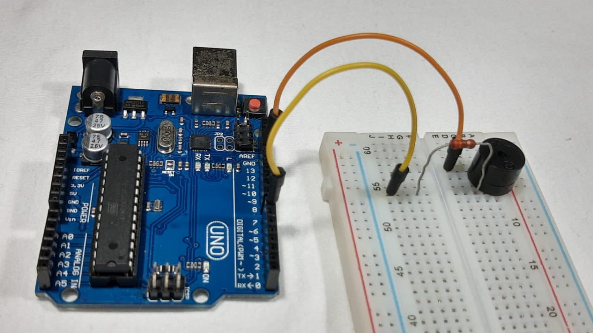

Lavinya Carrazoni
Engenheira
Materiais necessários para a montagem :

Materiais necessários para a montagem :
Iniciando a montagem :
Com o auxílio da protoboard, conecte o pino positivo(+) do buzzer a um resistor.
Ligue o resistor ao pino 12 do Arduíno
Ligando o buzzer:

Conecte o outro pino do buzzer (negativo) ao GND da placa arduíno uno.
Conectando as saidas 5v e GND:
Ligue com fios a porta "5v" do arduíno a linha lateral negativa do protoboard e a "gnd"(localizada abaixo da 5v) a linha lateral positiva.
Posicionando os botões:
Posicione os dois botões na protoboard como mostra a imagem.
Conectando os botões:
Conecte os botões nas portas 2 e 3 respectivamente como mostrado na imagem acima.
Conectando o botão ao GND:
Conecte o resistor no ponto logo abaixo do pino inferior esquedo do botão e com o auxílio de um fio conecte a linha positiva ,que está ligada ao GND, no resistor.
Conectando 5v ao botão:
Em seguida conecte o pino restante de cada botão na linha negativa que está ligada ao "5v" do arduíno.
Conectando o Arduino ao Computador:
Agora pegue o cabo USB e conecte ele ao computador para que assim possamos passar fazê-lo funcionar
Material para a visualização: